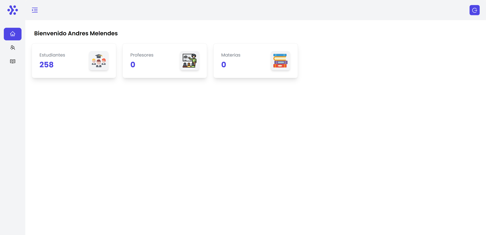

<div id="de_modal-content" class="container">
    <div class="row g-5">
        <div class="col-lg-8">
            <div class="row g-4">
                <div class="col-lg-12 item">
                    
                </div>
            </div>
        </div>

        <div class="col-lg-4 de_project-info">
            <h3>School Administrator</h3>
            <p>I'm currently working on a school administrator project that focuses on providing a user-friendly platform for creating exams and managing evaluations. 
                The project is being developed utilizing Python and Django and TypeScript and React for frontend.</p>
            <p>The main feature of the project is the creation of exams, which can be customized to fit the needs of individual
                classes and students. The platform allows for the creation of multiple-choice, essay, and other types of questions,
                and provides an intuitive interface for managing and editing the exams as needed.</p>
            <p>Additionally, the platform features a comprehensive evaluation system that allows teachers to grade and evaluate
                student performance with ease. The evaluation system includes features such as automatic grading, rubric-based
                grading, and individualized feedback for students.</p>
            <p>As the backend developer for this project, my role is to ensure that the platform is secure, scalable, and efficient.
                I'm working closely with the frontend development team to ensure that the backend and frontend integrate seamlessly,
                and that the overall user experience is intuitive and user-friendly.</p>
            <p>The platform is being developed with a focus on mobile accessibility, 
                ensuring that teachers and students can access the platform from their mobile devices. 
                This makes it easy for teachers to create and manage exams on-the-go, and for students to access their evaluations from anywhere.
            </p>
           
            <div class="de_project-details">
                <div class="d-field">
                    <i class="fa fa-file-text-o"></i>Type: <span>Commercial Project</span>
                </div>
                <div class="d-field">
                    <i class="fa fa-user-o"></i>Role: <span>Backend Engineer</span>
                </div>
                <div class="d-field">
                    <i class="fa fa-file-text-o"></i>Year: <span>Under Development</span>
                </div>
                <div class="d-field">
                    <i class="fa fa-external-link"></i>Preview: <span><a href="https://marvelous-alfajores-4c60f3.netlify.app/login">View</a></span>
                </div>
                <div class="d-field">
                    <i class="fa fa-external-link"></i>Now allowed to show the code
                </div>
            </div>
            <div class="spacer-30"></div>
        </div>
    </div>
</div>